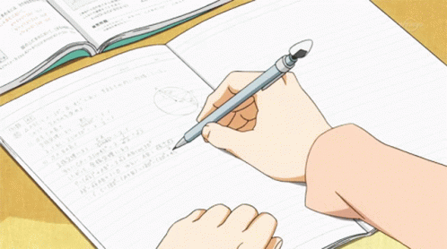
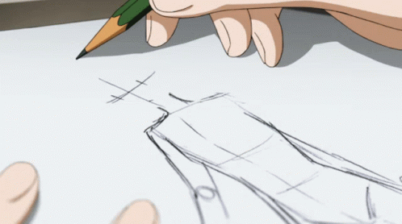
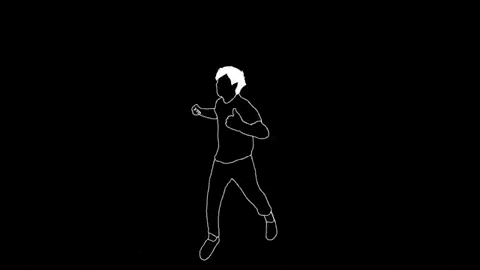

WRITING

DRAWING

DANCING
One needs a break to pursue their interests after the hectic pace of this life. Giving someone a stress-free state of mind while they are growing their inner selves is one of life's key components. When I have time, I love to write and express myself. I carve out time in my hectic schedule for writing stories and poems. I write about any current event or my own feelings that inspire me to express them via words. Additionally, the novels I read inspire me. When I'm compelled to wait or have nothing to do, I feel terribly worthless and bored. I make an effort to give my all while engaging in an activity that I truly like. In addition to blogging about my opinions, I also like to paint and listen to music. I need inspiration from others around me to compose poems because they encourage me to express myself. I want to make the most of every second of my life and live it fully. We only have this life to live once, after all.
Each of us has some things in life that we like or dislike in some way. In a similar vein, I enjoy drawing because it is free and always interesting. My favorite pastime is drawing. Without sketching, I could not imagine living a comfortable lifestyle. In my opinion, you do not need to be a great artist to exhibit your work. Just create something original. Whenever I'm feeling down, I sketch something to make myself feel better. I can express my creativity via drawing. However, drawing is more difficult than it first appears. Both practice and a lot of devotion are required. The idea of creativity and adventure is what I think makes my drawing the most appealing and distinctive. I enjoy selecting these original ideas since it brings out the spirit of my drawings in excruciating detail. My drawing pad, pen, and brush are always engaged during my free time. Even in school, drawing wasn't really my thing. Nevertheless, I learned it on my own and afterwards had parental encouragement. I picked up a couple ideas from my text book's assortment of doodles. Everything from those books, including the rivers, hills, trees, human faces, clouds, and animals, has always made an impression on me. My drawing got better over the course of the day and is still getting better. I make regular efforts to keep up my hobby.
My passion is dancing. No matter their age, many people dance these days. All you need for dancing are some comfortable clothes and comfortable shoes. Ballet, for example, cannot be performed in shoes that are too loose. Similarly, no matter what you wear, it won't go with your dance moves. For instance, people will stare at you strangely if you dance ballet in loose clothing. Every kind of dance has a distinct beat and method of moving. One needs to develop their sense of rhythm and dance technique. I dance because it's the best method for me to stay in shape and be healthy. I feel pleased and relaxed after dancing. My life will never stop include dancing. It is a type of sport that appeals to all age groups. Every unique occasion makes me want to dance. Nobody can stop me from moving my feet quickly in time with the music when I dance at events. Even if someone were to accomplish it, it would be similar to making steps to avert a natural disaster. Since I was a young child, dancing has always been my love. I can convey my emotions by dancing. If I hear music, I want to dance no matter where I am. Technique, timing, hand-eye coordination, rhythm, emotion, and personality are all important components of dancing. I enjoy learning new dance moves and practicing them anytime I have free time from my busy routine.